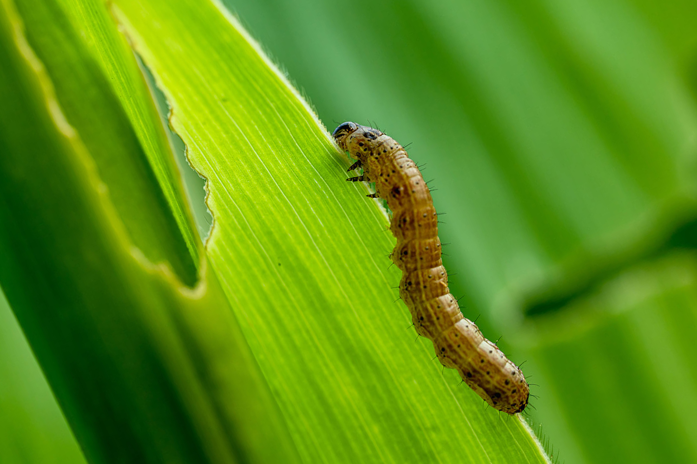
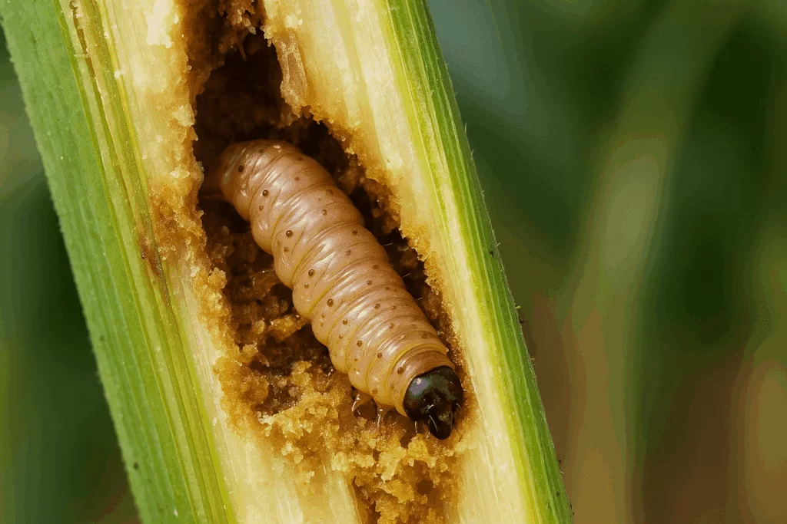
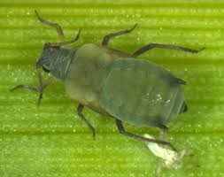
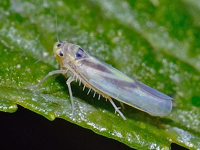

Monitoreo de plagas
Revisa las plagas más comunes en tu cultivo y actúa a tiempo para proteger tu producción.
¿Qué plagas monitorear?
Revisa las plagas más comunes del maíz.

1. Gusano Cogollero
(Spodoptera frugiperda)
Daño: Afecta las hojas y cogollos, reduciendo el crecimiento y la fotosíntesis.
Señales: Hojas con huecos, excremento en el cogollo y plantas debilitadas.

2. Barrenador del Tallo
(Ostrinia nubilalis)
Daño: Perfora los tallos y mazorcas, causando roturas y reduciendo el rendimiento.
Señales: Agujeros en tallos o mazorcas, aserrín en las perforaciones y plantas quebradas.

3. Pulgón del Maíz
(Rhopalosiphum maidis)
Daño: Chupa la savia, debilitando la planta y transmitiendo enfermedades virales.
Señales: Colonias de pulgones en hojas, hojas amarillas y plantas con crecimiento lento.

4. Trips del Maíz
(Frankliniella williamsi)
Daño: Dañan las hojas y flores, afectando la polinización y el desarrollo de los granos.
Señales: Rayas plateadas en las hojas, daño en flores y granos pequeños o deformes.
¿Qué hacer?
-
Revisa tu cultivo 2 veces por semana, especialmente el envés de las hojas y el cogollo.
-
Si encuentras pocas plagas, retíralas a mano o con agua a presión.
-
Si la plaga aumenta, aplica un control biológico o un insecticida recomendado según la etiqueta.
Recomendación
Detectar a tiempo es la clave.
Un monitoreo constante te ayuda a tomar mejores decisiones y proteger tu cultivo.